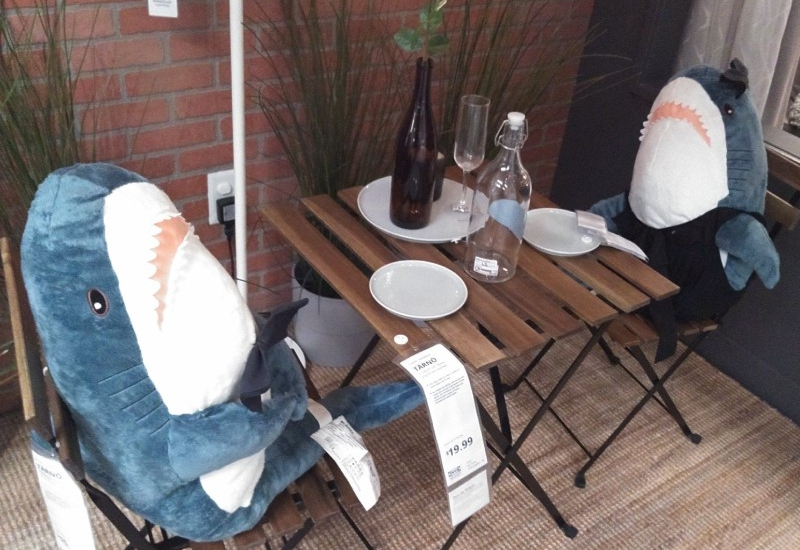
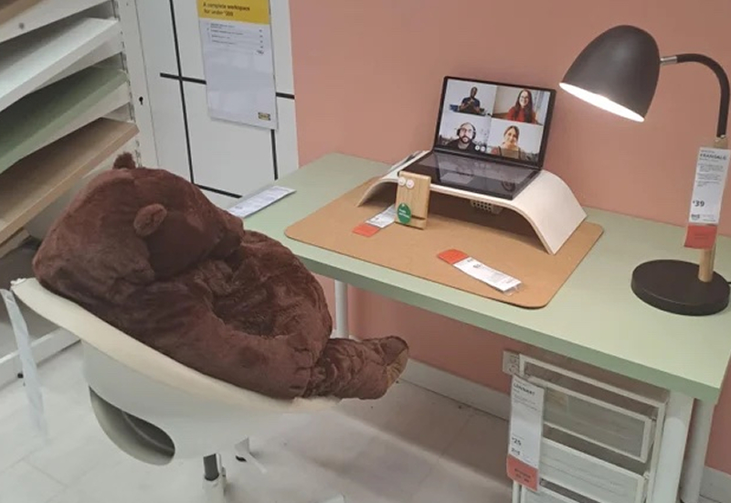

- Blahaj @Blahaj - May 5
- Blahaj is having delicious dinner with fren!

- ikea.com
- Blahaj is having delicious dinner with fren!
- Take our famous meatballs home to prepare in your own kitchen. Serve Swedish style with mash, lingonberry...
| 2 | 15 | 78 | 4,020 |

- Djungelskog @Djungelskog - May 5
- Djungelskog understands the importance of online meetings during the pandemic. Respect. Keep real.

- ikeanews.com
- Djungelskog understands the importance of online...
- Online meetings are an integral part of work and requires professionalism, even from home. Being on time and...
| 9 | 56 | 430 | 45.7k |